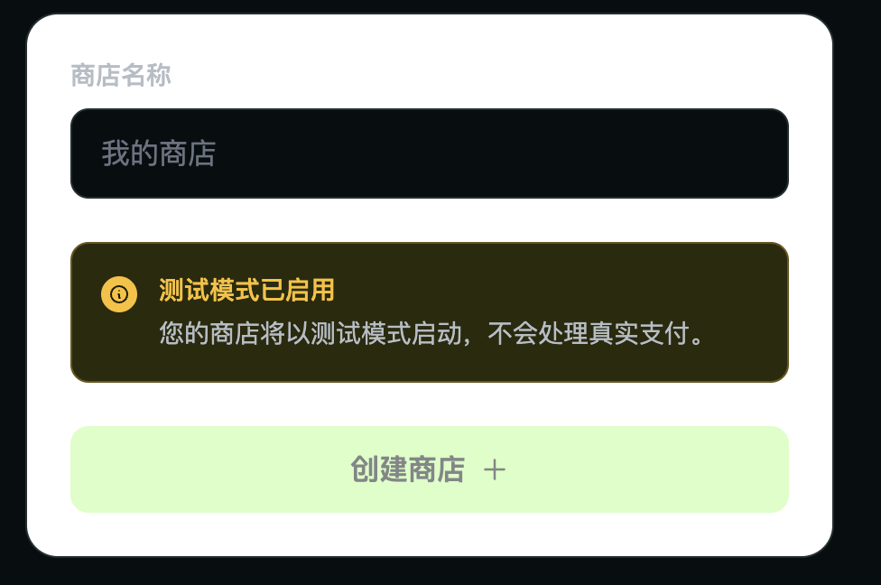

最近在小红书发现一个叫 Waffo 的支付渠道，由中国团队开发。当时他们正在招募内测用户，我申请并接入了。
整体使用感受不错，主要有三个特点：
1. 接入便捷 对个人开发者非常友好，无需注册公司即可申请。官方还提供了完整的集成指南（skill 和 llms-full.txt），可以直接让 AI 辅助对接，省去大量文档阅读时间。
2. MoR 模式（Merchant of Record） Waffo 作为 Merchant of Record，包揽支付、税务、合规、付款结算等全部中间环节。开发者只需专注于产品本身，不用分心处理全球各地的税务申报。
3. 国内支付支持（计划中） 面向国内市场的微信和支付宝正在接入中，预计近期上线。
下面我也让 Chatgpt 去帮忙调研了一下它跟其他一些主流支付渠道的区别：
| 维度 | Waffo Pancake | Stripe | Creem | PayPal |
|---|---|---|---|---|
| 核心定位 | MoR + 全球支付 + 税务/合规 + 订阅/一次性支付；文档明确“Waffo Pancake handles payments, taxes, compliance, payouts”。( Waffo ) | 默认是强大的支付基础设施/支付处理器；也有 Stripe Managed Payments 作为 MoR 方案。( Stripe ) | MoR，面向 SaaS / 软件公司，处理税务、退款、chargeback、合规。( Creem ) | 支付钱包 + Checkout + 卡支付/Pay Later/Venmo；默认不是 MoR，税务责任通常仍在商家。( PayPal Developer ) |
| 是否 MoR | 是。Waffo 作为 legal seller，处理税务、发票、税务申报。( Waffo ) | 默认 Payments 不是；Stripe Tax 也只是自动化税务计算/收取，商家仍可保持 MoR；Managed Payments 是 MoR。( Stripe ) | 是。Creem 明确作为 Merchant of Record，负责税务、退款、chargeback 等。( Creem ) | 否。PayPal 用户协议写明，商家负责判断、评估、收取、申报和缴纳交易相关税款，PayPal 不负责计算/收取/申报/缴纳交易税。( PayPal ) |
| 典型费率 | Waffo Pancake MoR Beta： 3.9% + $0.50 / successful transaction ；退款 $1；失败授权/3DS 某些情况 $0.30；提现 1%，最低 $10。( Waffo ) | Stripe Payments 美国标准： 2.9% + $0.30 国内卡；Billing PAYG 另收 0.7% ；Tax Basic no-code 0.5% 或 API $0.50/笔 ；Managed Payments 是 额外 3.5% ，叠加 Payments 费用。( Stripe ) | 标准： 3.9% + $0.40 / successful transaction ；但 revenue splits、affiliate、abandoned cart recovery 等会产生额外费用，境外提现也可能有费用。( Creem ) | 美国商户示例：PayPal/Venmo 3.49% + $0.49 ；Expanded Checkout 卡支付 2.89% + $0.29 ；Pay Later 4.99% + $0.49 ；国际交易通常再加 1.50% 。( PayPal ) |
| $100 交易粗略成本，不含税/退款/提现 | $4.40；如单独提现还需按提现规则计算。 | Stripe Payments：$3.20；若用 Billing/Tax/Managed Payments 会另加。Managed Payments 约 $6.70 起，按“Payments + 3.5%”估算。 | $4.30；若启用 splits/affiliate/recovery 或境外提现，成本增加。 | PayPal/Venmo $3.98；Expanded Checkout 卡 $3.18；国际交易再加约 $1.50。 |
| 税务与合规 | 强项。Waffo 作为 MoR 处理税务注册、税率计算、收取、申报、审计/争议等；文档强调使用普通支付处理器时税务仍由商家承担。( Waffo ) | 默认需要自己负责税务与合规，可用 Stripe Tax 自动化部分税务流程；Managed Payments 可转移税务责任到 Stripe。( Stripe ) | 强项。Creem 说明 MoR 负责税务合规、VAT/GST/销售税、退款与 chargeback。( Creem ) | 弱项。PayPal 明确交易税务判断、收取、申报、缴纳由用户负责。( PayPal ) |
| 支付方式/本地化 | 文档列出卡、Apple Pay、Google Pay、部分地区本地支付；官网称 480+ payment methods、162 countries、135 currencies，但这与 Pancake 文档需区分验证。( Waffo ) | 非常强。Stripe Pricing 写明 195 countries、135+ currencies、100+ payment methods。( Stripe ) | 中等偏强。支持信用卡、Apple Pay、Google Pay、Bancontact、Cartes Bancaires、EPS、iDEAL、Link、MobilePay 等，并按客户位置自动展示。( Creem ) | 强在 PayPal 钱包、Venmo、Pay Later 和卡支付；PayPal Checkout 可接受 PayPal、借记/信用卡、Pay Later、Venmo、APM。( PayPal Developer ) |
| 订阅/用量计费能力 | 支持一次性、订阅、产品组、trial、动态定价 priceSnapshot 、overage/top-up 等，适合 AI/SaaS。( Waffo ) | 极强。Stripe Billing 支持 recurring、usage-based、one-time billing，生态成熟。( Stripe ) | 强。文档导航包含订阅、seat-based billing、revenue splits、affiliate、discount、free trials、customer portal、bundles。( Creem ) | 有订阅 API，可创建 billing plans 和 subscriptions，也支持固定/阶梯/数量相关计划；但整体 SaaS 账务生态不如 Stripe。( PayPal Developer ) |
| 开发者体验 | REST 写入 + GraphQL 只读查询；RSA-SHA256 API 签名；SDK；webhook；适合代码/AI Agent 集成。( Waffo ) | 行业标杆。API、SDK、Checkout、Billing、Tax、Connect、Webhook、Dashboard 生态最成熟。( Stripe ) | 有 API、CLI、webhook、AI integration；开发能力不错，但生态规模明显小于 Stripe。( Creem ) | Checkout 集成快，15 分钟 copy-paste 集成；也有 Orders API、Subscriptions API。( PayPal Developer ) |
| 提现/覆盖限制 | 文档显示 payout 支持 19 个国家 ，CNY 通过支付宝，其他多为 SWIFT；审核通常 1–3 个工作日。( Waffo ) | 全球支付与结算能力强，但具体可开户/提现国家取决于 Stripe 支持地区和产品。 | 支持商户 payout 86 个国家 ；本地银行转账 7 EUR/USD 或 1% 取高，Stripe Connect 在 35 个国家无 payout fee；每月 1 日和 15 日结算。( Creem ) | 全球知名度高，提现与账户能力取决于各国 PayPal 规则；存在账户风控/hold/limitation 机制。( PayPal ) |
| 最适合 | 想快速上线 MoR、卖 SaaS/AI/数字产品、希望少处理税务合规、接受早期产品风险的团队。 | 工程能力强、需要最大可控性/扩展性/多产品生态；或用 Stripe Managed Payments 做选择性 MoR。 | Indie SaaS / 软件产品 / 需要 MoR + revenue split + affiliate + payout 覆盖更广的团队。 | 需要 PayPal 钱包品牌信任、买家覆盖、快速接入 Checkout，但能自行处理税务合规的商家。 |
注册到收款全流程实操
下面是从零开始接入 Waffo 的完整步骤，基于官方文档整理。
第一步：注册账号
访问 pancake.waffo.ai，支持三种方式登录：
- Google OAuth
- GitHub OAuth
- Magic Link（邮箱验证码）
注册即开通，前 $2,000 交易额免手续费。个人开发者可直接收款，无需注册公司。
第二步：创建商店
首次登录后会自动引导创建商店，只需填写商店名称即可。创建完成后你会获得一个 storeId。

第三步：创建产品并定价
路径：控制台 → 产品 → 创建产品
需要配置：
- 产品名称
- 计费类型：onetime（一次性）或 subscription（订阅）
- 价格：如 USD: { amount: "29.00", taxCategory: "digital_goods" }
- 订阅周期（如选订阅）：周 / 月 / 季 / 年
动态定价场景：创建一次性产品后，服务端计算金额，通过 priceSnapshot 传入。
第四步：获取 API 密钥
路径：Dashboard → Merchant → Integration → API Keys
记录两个关键值作为环境变量：
WAFFO_MERCHANT_ID=your-merchant-id
WAFFO_PRIVATE_KEY=your-rsa-private-key第五步：集成 SDK
安装依赖：
npm install @waffo/pancake-ts初始化客户端：
import { WaffoPancake } from "@waffo/pancake-ts";
const client = new WaffoPancake({
merchantId: process.env.WAFFO_MERCHANT_ID!,
privateKey: process.env.WAFFO_PRIVATE_KEY!,
});创建结账会话（推荐认证式，防止试用滥用）：
const result = await client.checkout.authenticated.create({
productId: "PROD_xxx",
currency: "USD",
buyerIdentity: "userIdInYourSystem",
buyerEmail: "customer@example.com",
});
// 重定向到 result.checkoutUrl匿名结账（适合未登录场景）：
const result = await client.checkout.anonymous.create({
productId: "PROD_xxx",
currency: "USD",
});第六步：配置 Webhook
1. 准备 HTTPS 端点 服务端点需接受 POST 并返回 200。
2. 控制台配置 Webhook 路径：控制台输入端点 URL，选择订阅事件。
3. 签名验证（必须使用原始 body）
import { verifyWebhook } from "@waffo/pancake-ts";
app.post("/webhooks", express.raw({ type: "application/json" }), (req, res) => {
const event = verifyWebhook(
req.body.toString("utf-8"),
req.headers["x-waffo-signature"] as string,
);
// event.eventType: order.completed / subscription.activated / ...
});关键事件：
| 事件 | 触发时机 |
|---|---|
| order.completed | 一次性订单支付成功 |
| subscription.activated | 订阅首次支付成功 |
| subscription.payment_succeeded | 续期成功 |
| subscription.canceled | 订阅终止 |
| refund.succeeded | 退款完成 |
第七步：测试支付
切换测试环境：API 请求头加 -H "X-Environment: test"，或在控制台顶部切换。
测试卡号：
- 成功：4576 7500 0000 0110（Visa）
- 拒绝：4576 7500 0000 0220
验证 Webhook 是否收到 order.completed 事件，确认链路通畅。
第八步：上线（KYB + 收款配置）
1. 完成商业认证（KYB） 路径：设置 → 商业详情 提交身份/企业信息，审核通常 1-3 个工作日。
2. 绑定收款账户 路径：财务 → 付款设置 添加银行账户：
- CNY 通过支付宝到账
- 其他货币多为 SWIFT 转账
- 支持 19 个国家提现
3. 发布到生产环境 一键将产品从测试环境发布到生产环境，API 调用时移除 X-Environment: test 请求头。
提现规则
- 提现手续费：1%，最低 $10
- 结算周期：通常 1-3 个工作日审核到账
- Waffo 作为 MoR 已代扣税务合规，提现时无需额外处理税务
Waffo 需求反馈响应很快。相比 Stripe 那种工单-邮件来回的模式，沟通成本低得多，想支持的功能可以直接提。有兴趣的可以访问 waffo.ai 申请
如果你正在做 AI 工具、SaaS 或数字产品，需要一个能快速上手的 MoR 支付方案，Waffo 值得试试。
附上工作人员的联系方式，有问题可以找她咨询